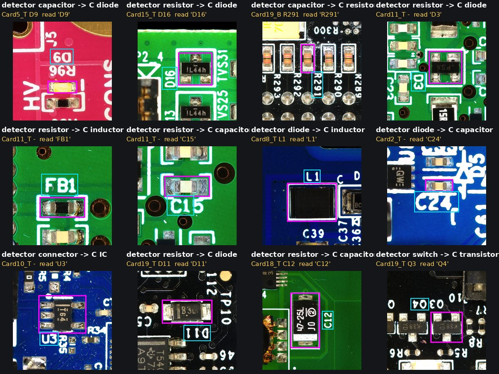
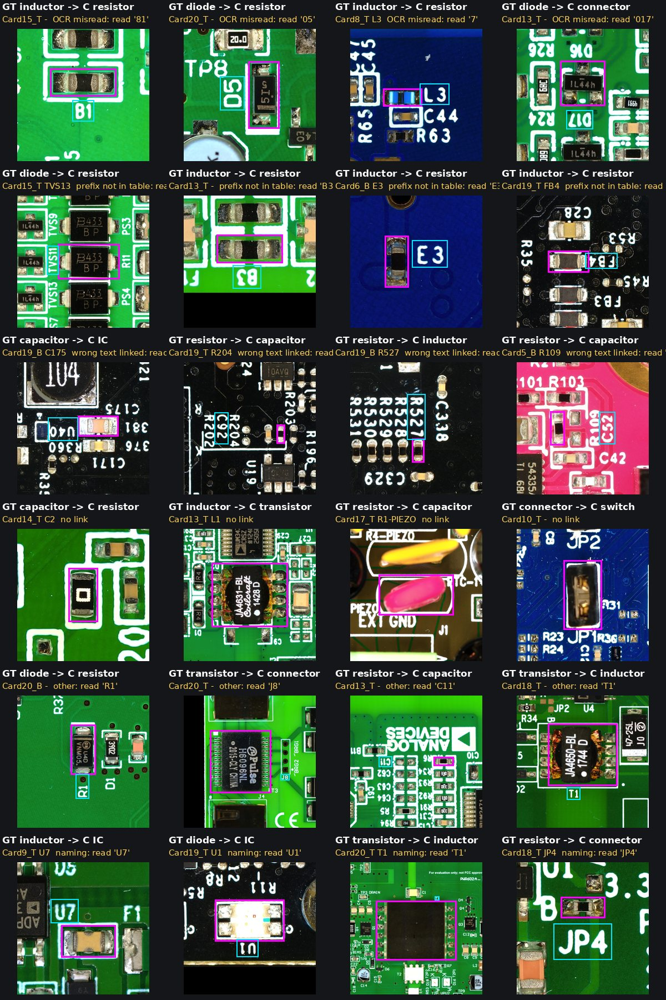
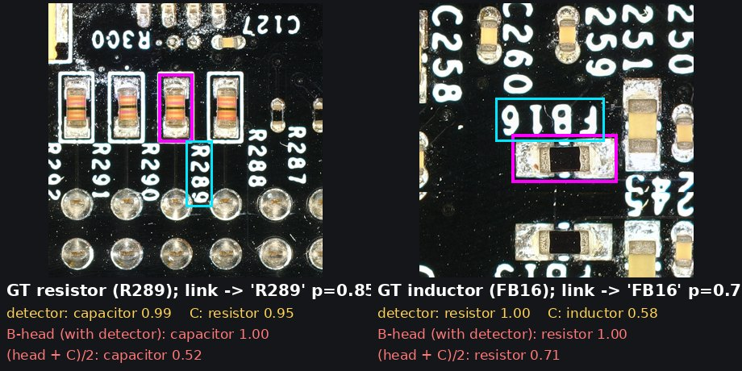

<title>21PCB Class Results</title>
<link rel="stylesheet" href="https://fonts.googleapis.com/css2?family=IBM+Plex+Sans:wght@400;500;600&family=IBM+Plex+Mono:wght@400;500&display=swap">
<style>
/* Layout: one reading column (max 1080px) with full-width figures; tables scroll inside their own box on phones. */
:root {
  --bg: #f6f7f5; --panel: #ffffff; --fg: #1d2420; --dim: #5d6a62; --line: #d8ded9; --accent: #0f7a5c; --accent2: #b4531a; --bad: #b3261e;
  --sans: "IBM Plex Sans", system-ui, sans-serif; --mono: "IBM Plex Mono", ui-monospace, monospace;
}
@media (prefers-color-scheme: dark) { :root:not([data-theme="light"]) { --bg: #121614; --panel: #1a201d; --fg: #e3e9e5; --dim: #9aa8a0; --line: #2e3833; --accent: #4cc39b; --accent2: #f0a46a; --bad: #ff8a80; color-scheme: dark; } }
:root[data-theme="dark"] { --bg: #121614; --panel: #1a201d; --fg: #e3e9e5; --dim: #9aa8a0; --line: #2e3833; --accent: #4cc39b; --accent2: #f0a46a; --bad: #ff8a80; color-scheme: dark; }
body { background: var(--bg); color: var(--fg); font: 15px/1.6 var(--sans); margin: 0; }
main { max-width: 1080px; margin: 0 auto; padding-block: 28px 64px; padding-inline: 16px; }
h1 { font-size: 26px; margin: 0 0 4px; text-wrap: balance; }
h2 { font-size: 19px; margin: 40px 0 10px; padding-top: 8px; border-top: 1px solid var(--line); text-wrap: balance; }
h3 { font-size: 15px; margin: 18px 0 6px; }
p, li { max-width: 72ch; }
.sub { color: var(--dim); margin: 0 0 18px; }
.kpis { display: grid; grid-template-columns: repeat(auto-fit, minmax(170px, 1fr)); gap: 10px; margin: 18px 0; }
.kpi { background: var(--panel); border: 1px solid var(--line); border-radius: 8px; padding: 12px 14px; }
.kpi b { display: block; font: 600 22px var(--mono); font-variant-numeric: tabular-nums; }
.kpi span { color: var(--dim); font-size: 13px; }
.tbl { overflow-x: auto; background: var(--panel); border: 1px solid var(--line); border-radius: 8px; }
table { border-collapse: collapse; width: 100%; font-variant-numeric: tabular-nums; font-size: 14px; }
th, td { padding: 6px 10px; text-align: right; border-bottom: 1px solid var(--line); white-space: nowrap; }
th:first-child, td:first-child { text-align: left; }
thead th { font-weight: 600; color: var(--dim); font-size: 12.5px; text-transform: uppercase; letter-spacing: .04em; }
tr.best td { font-weight: 600; color: var(--accent); }
tr.pending td { color: var(--dim); font-style: italic; }
.mono { font-family: var(--mono); }
figure { margin: 14px 0; }
figcaption { color: var(--dim); font-size: 13.5px; margin-top: 6px; max-width: 80ch; }
.diagrams { display: grid; grid-template-columns: repeat(auto-fit, minmax(min(100%, 500px), 1fr)); gap: 12px; }
.diagram { background: var(--panel); border: 1px solid var(--line); border-radius: 8px; padding: 10px 12px; min-width: 0; }
.diagram svg { width: 100%; height: auto; color: var(--fg); }
.diagram h3 { margin-top: 2px; }
.diagram p { margin: 4px 0 0; font-size: 13.5px; color: var(--dim); }
img.sheet { width: 100%; height: auto; border-radius: 6px; border: 1px solid var(--line); }
.note { background: var(--panel); border-left: 3px solid var(--accent2); padding: 8px 12px; border-radius: 4px; }
.bar { height: 10px; border-radius: 3px; display: inline-block; vertical-align: middle; }
</style>

<main>
<h1>21PCB Class Results</h1>
<p class="sub">Who decides the class of a detected part, on a second photo set: 21 lab-photographed evaluation boards, test set = the 28 photos with IC annotation, 3,274 labelled parts. Same checkpoints and rules as on WACV; nothing tuned on 21PCB. Main metric: one class per box (standard detection output).</p>
<div class="kpis">
  <div class="kpi"><b>0.633 → 0.820</b><span>mAP50, detector → C (one class per box)</span></div>
  <div class="kpi"><b>0.405 → 0.728</b><span>APr: switch, inductor, transistor, oscillator</span></div>
  <div class="kpi"><b>65 → 86 %</b><span>balanced class accuracy on found parts</span></div>
  <div class="kpi"><b>169 / 40</b><span>parts fixed / broken by C vs the detector (of 3,050 found)</span></div>
</div>

<h2>1. Test set</h2>
<p>28 photos (21 top + 7 bottom sides with ICs), 87.8 px/mm. Every box and class was checked by hand, starting from detector + OCR + BoM pre-labels and, on 12 photos, the vendors' design files. Class rules: fuse → ignore; ferrite bead, EMI filter, transformer → inductor; LED, TVS → diode; 0-Ω link → resistor; test points, holes, fiducials, empty pads not labelled.</p>
<div class="tbl"><table>
<thead><tr><th>class</th><th>resistor</th><th>capacitor</th><th>diode</th><th>IC</th><th>connector</th><th>inductor</th><th>transistor</th><th>switch</th><th>oscillator</th><th>ignore</th></tr></thead>
<tbody><tr><td>parts</td><td>1,375</td><td>1,094</td><td>213</td><td>206</td><td>198</td><td>101</td><td>44</td><td>13</td><td>10</td><td>20</td></tr></tbody>
</table></div>

<h2>2. Methods</h2>
<p>All three use the same detector boxes; only the class decision differs. The linkers are trained on KiCad layouts only (no photos).</p>
<div class="diagrams">
<div class="diagram"><h3>Detector (baseline)</h3>
<svg viewBox="0 0 500 90" role="img" aria-label="Photo to detector to box plus 9 class scores to class">
<defs><marker id="a1" viewBox="0 0 10 10" refX="9" refY="5" markerWidth="7" markerHeight="7" orient="auto"><path d="M0,0 L10,5 L0,10 z" fill="currentColor"/></marker></defs>
<g font-family="IBM Plex Sans, sans-serif" font-size="12.5" fill="currentColor">
<rect x="6" y="28" width="80" height="34" rx="5" fill="none" stroke="currentColor"/><text x="46" y="49" text-anchor="middle">photo</text>
<rect x="130" y="28" width="120" height="34" rx="5" fill="none" stroke="currentColor"/><text x="190" y="44" text-anchor="middle">v22 detector</text><text x="190" y="57" text-anchor="middle" font-size="10.5">scaled tiles</text>
<rect x="294" y="28" width="100" height="34" rx="5" fill="none" stroke="currentColor"/><text x="344" y="44" text-anchor="middle">box +</text><text x="344" y="57" text-anchor="middle" font-size="10.5">9 class scores d</text>
<rect x="432" y="28" width="62" height="34" rx="5" fill="none" stroke="#0f7a5c" stroke-width="2"/><text x="463" y="49" text-anchor="middle">class</text>
<line x1="86" y1="45" x2="128" y2="45" stroke="currentColor" marker-end="url(#a1)"/><line x1="250" y1="45" x2="292" y2="45" stroke="currentColor" marker-end="url(#a1)"/><line x1="394" y1="45" x2="430" y2="45" stroke="currentColor" marker-end="url(#a1)"/>
<text x="412" y="38" text-anchor="middle" font-size="10">argmax</text></g></svg>
<p>Appearance only. Strong on R / C / IC, weak on rare classes that look like resistors.</p></div>


<div class="diagram"><h3>C: soft cascade (no training)</h3>
<svg viewBox="0 0 500 120" role="img" aria-label="Soft link probabilities times soft prefix probabilities plus the none mass times detector scores">
<defs><marker id="a3" viewBox="0 0 10 10" refX="9" refY="5" markerWidth="7" markerHeight="7" orient="auto"><path d="M0,0 L10,5 L0,10 z" fill="currentColor"/></marker></defs>
<g font-family="IBM Plex Sans, sans-serif" font-size="12" fill="currentColor">
<rect x="6" y="12" width="120" height="34" rx="5" fill="none" stroke="currentColor"/><text x="66" y="27" text-anchor="middle">link softmax a_ij</text><text x="66" y="40" text-anchor="middle" font-size="10">texts + none</text>
<rect x="6" y="70" width="120" height="34" rx="5" fill="none" stroke="currentColor"/><text x="66" y="85" text-anchor="middle">PARSeq char probs</text><text x="66" y="98" text-anchor="middle" font-size="10">→ q_j(class)</text>
<rect x="168" y="40" width="190" height="38" rx="5" fill="none" stroke="currentColor"/><text x="263" y="56" text-anchor="middle" font-family="IBM Plex Mono, monospace" font-size="11">Σ a_ij q_j(c)</text><text x="263" y="71" text-anchor="middle" font-family="IBM Plex Mono, monospace" font-size="11">+ (a_none + Σ a_ij q_j(∅)) d(c)</text>
<rect x="400" y="40" width="94" height="38" rx="5" fill="none" stroke="#0f7a5c" stroke-width="2"/><text x="447" y="56" text-anchor="middle">P(class)</text><text x="447" y="70" text-anchor="middle" font-size="10">top-3 per box</text>
<line x1="126" y1="29" x2="166" y2="52" stroke="currentColor" marker-end="url(#a3)"/><line x1="126" y1="87" x2="166" y2="68" stroke="currentColor" marker-end="url(#a3)"/><line x1="358" y1="59" x2="398" y2="59" stroke="currentColor" marker-end="url(#a3)"/>
<text x="263" y="110" text-anchor="middle" font-size="10.5">uncertain link or reading falls back to the detector scores d</text></g></svg>
<p>Noise-trained LinkFormer (v2d2_I_noise05_100k) on the off-part OCR boxes; PARSeq character probabilities; fixed prefix table. The cleanest view of linker + OCR.</p></div>


<div class="diagram"><h3>B-head: LinkFormer with a class head</h3>
<svg viewBox="0 0 500 130" role="img" aria-label="Part tokens carry detector scores; LinkFormer outputs links and a class head; the final class mixes the head and the soft cascade">
<defs><marker id="a4" viewBox="0 0 10 10" refX="9" refY="5" markerWidth="7" markerHeight="7" orient="auto"><path d="M0,0 L10,5 L0,10 z" fill="currentColor"/></marker></defs>
<g font-family="IBM Plex Sans, sans-serif" font-size="12" fill="currentColor">
<rect x="6" y="10" width="120" height="34" rx="5" fill="none" stroke="currentColor"/><text x="66" y="25" text-anchor="middle">part tokens</text><text x="66" y="38" text-anchor="middle" font-size="10">geometry + detector d</text>
<rect x="6" y="74" width="120" height="34" rx="5" fill="none" stroke="currentColor"/><text x="66" y="89" text-anchor="middle">text tokens</text><text x="66" y="102" text-anchor="middle" font-size="10">PARSeq image features</text>
<rect x="166" y="38" width="104" height="44" rx="5" fill="none" stroke="currentColor"/><text x="218" y="56" text-anchor="middle">LinkFormer B</text><text x="218" y="70" text-anchor="middle" font-size="10">d dropout 30 %</text>
<rect x="306" y="12" width="92" height="32" rx="5" fill="none" stroke="currentColor"/><text x="352" y="32" text-anchor="middle">class head</text>

<rect x="430" y="12" width="64" height="32" rx="5" fill="none" stroke="#0f7a5c" stroke-width="2"/><text x="462" y="32" text-anchor="middle">class</text>
<line x1="126" y1="27" x2="164" y2="50" stroke="currentColor" marker-end="url(#a4)"/><line x1="126" y1="91" x2="164" y2="70" stroke="currentColor" marker-end="url(#a4)"/>
<line x1="270" y1="52" x2="304" y2="30" stroke="currentColor" marker-end="url(#a4)"/><text x="352" y="96" text-anchor="middle" font-size="10.5">+ links (not used for the class here)</text>
<line x1="398" y1="28" x2="428" y2="28" stroke="currentColor" marker-end="url(#a4)"/>
<text x="287" y="124" text-anchor="middle" font-size="10.5">trained on KiCad: class target from the footprint, simulated detector scores</text></g></svg>
<p>The linker itself predicts the class. Its part tokens carry the detector's 9 class scores, so the head mixes appearance, label and context.</p></div>
</div>

<h2>3. Results</h2>
<p>One class per box (standard detection output); score = detector box score × P(class). Same detector boxes for all rows. <b>C + LLM prefix table</b> = C, with the fixed prefix → class table replaced per board by a blind LLM agent's decisions (inference only, no BoM or ground truth).</p>
<h3>WACV (42 test photos, 5,585 parts)</h3>
<div class="tbl"><table><thead><tr><th>method</th><th>mAP50</th><th>mAP50-95</th><th>prec</th><th>recall</th><th>F1</th><th>macro-F1</th><th>APf</th><th>APc</th><th>APr</th><th>bal. acc</th></tr></thead><tbody><tr><td>Detector</td><td>0.541</td><td>0.359</td><td>0.814</td><td>0.661</td><td>0.729</td><td>0.604</td><td>0.632</td><td>0.699</td><td>0.394</td><td>67.4 %</td></tr><tr><td>C (soft cascade)</td><td>0.608</td><td>0.402</td><td>0.864</td><td>0.657</td><td>0.746</td><td>0.658</td><td>0.638</td><td>0.730</td><td>0.525</td><td>76.5 %</td></tr><tr><td>C + LLM prefix table</td><td>0.626</td><td>0.414</td><td>0.867</td><td>0.659</td><td>0.749</td><td>0.674</td><td>0.637</td><td>0.760</td><td>0.550</td><td>78.1 %</td></tr><tr class="best"><td>B-head</td><td>0.641</td><td>0.428</td><td>0.882</td><td>0.672</td><td>0.763</td><td>0.710</td><td>0.644</td><td>0.781</td><td>0.568</td><td>82.7 %</td></tr></tbody></table></div>
<h3>21PCB (28 photos, 3,274 parts)</h3>
<div class="tbl"><table><thead><tr><th>method</th><th>mAP50</th><th>mAP50-95</th><th>prec</th><th>recall</th><th>F1</th><th>macro-F1</th><th>APf</th><th>APc</th><th>APr</th><th>bal. acc</th></tr></thead><tbody><tr><td>Detector</td><td>0.633</td><td>0.588</td><td>0.865</td><td>0.856</td><td>0.860</td><td>0.638</td><td>0.887</td><td>0.709</td><td>0.405</td><td>65.4 %</td></tr><tr><td>C (soft cascade)</td><td>0.820</td><td>0.761</td><td>0.925</td><td>0.880</td><td>0.902</td><td>0.825</td><td>0.914</td><td>0.865</td><td>0.728</td><td>86.2 %</td></tr><tr class="best"><td>C + LLM prefix table</td><td>0.836</td><td>0.777</td><td>0.935</td><td>0.890</td><td>0.912</td><td>0.854</td><td>0.921</td><td>0.869</td><td>0.756</td><td>87.6 %</td></tr><tr><td>B-head</td><td>0.793</td><td>0.741</td><td>0.926</td><td>0.887</td><td>0.906</td><td>0.834</td><td>0.911</td><td>0.827</td><td>0.688</td><td>83.2 %</td></tr></tbody></table></div>
<p style="font-size:13.5px;color:var(--dim)">Groups by the detector's training frequency (LVIS style): APf = R, C, connector; APc = IC, diode; APr = switch, inductor, transistor, oscillator. Precision / recall / F1 at score 0.25, class-aware. On WACV (blurry labels) B-head is best: it uses the detector's appearance. On 21PCB (sharp labels) C is better than B-head: B-head over-trusts the detector (section 5).</p>
<h2>4. Analysis of C (linker + OCR)</h2>
<h3>Accuracy on found parts</h3>
<p>Top class on the 3,050 parts the detector found (IoU ≥ 0.5, score ≥ 0.25). The printed label fixes the classes that look alike to the detector; R / C / connector stay where they were.</p>
<div class="tbl"><table>
<thead><tr><th>method</th><th>R</th><th>C</th><th>inductor</th><th>conn</th><th>diode</th><th>switch</th><th>transistor</th><th>IC</th><th>osc.</th><th>all</th></tr></thead>
<tbody>
<tr><td>parts</td><td>1,228</td><td>1,071</td><td>99</td><td>185</td><td>207</td><td>13</td><td>43</td><td>194</td><td>10</td><td>3,050</td></tr>
<tr><td>Detector</td><td>97.9</td><td>97.8</td><td>21.2</td><td>96.2</td><td>55.1</td><td>92.3</td><td>32.6</td><td>85.6</td><td>10.0</td><td>90.3</td></tr>
<tr class="best"><td>C</td><td>97.6</td><td>98.5</td><td>48.5</td><td>96.2</td><td>81.6</td><td>100</td><td>62.8</td><td>96.9</td><td>80.0</td><td>94.6</td></tr>
</tbody></table></div>
<figure><figcaption>Fixed by C (12 random of 169). Magenta = part, cyan = linked label. Ferrite beads, diodes, transistors and ICs read from their label.</figcaption></figure>

<h3>Why C still fails: 166 errors</h3>
<div class="tbl"><table>
<thead><tr><th>cause</th><th>errors</th><th>what happens</th><th>fix direction</th></tr></thead>
<tbody>
<tr><td><b>OCR misread</b></td><td>50</td><td>Right label linked, but read wrong: D15 read as "015", rotated or tiny text.</td><td>Better reader (orientation, resolution)</td></tr>
<tr><td><b>Prefix not in table</b></td><td>32</td><td>Readable designator with a board-specific prefix: B (beads), F (filters / fuses), TVS, FL, M.</td><td>World knowledge: the blind LLM prefix table raises C to 0.878 (top-3)</td></tr>
<tr><td>Wrong text linked</td><td>30</td><td>Dense rows and columns: the neighbour's label wins (R92 → C38, C237 → R464).</td><td>Linker</td></tr>
<tr><td>No link</td><td>28</td><td>Label hidden, far away or not printed → C falls back to the detector.</td><td>Appearance model</td></tr>
<tr><td>No GT designator</td><td>18</td><td>Part without a designator in the ground truth, cause not checkable.</td><td>–</td></tr>
<tr><td>Naming / class definition</td><td>8</td><td>Own label read correctly, but the table class differs from the GT: T2 (transformer module, GT transistor), JP3 (0-Ω resistor), J3, U2 (LED).</td><td>Class rules / GT review</td></tr>
</tbody></table></div>
<p>So about half of C's errors are reading and naming (82), not linking (30). C also breaks 40 parts the detector had right, mostly R ↔ C swaps from a neighbour's label.</p>
<p>All 166 errors, grouped as in this table, are in a separate browser served on the L40 (http://localhost:8766 after <span class="mono">ssh -L 8766:localhost:8766 l40</span>).</p>
<figure><figcaption>Four examples per cause, in the order of the table (OCR misread, prefix not in table, wrong text, no link, no GT designator, naming).</figcaption></figure>

<h2>5. B-head: two key cases</h2>
<p>B-head relies too much on the detector scores in its input. With the detector scores removed, the same model scores 0.801 on 21PCB (vs 0.793 with them) but 0.554 on WACV (vs 0.641): on sharp labels the detector disturbs it, on blurry labels it needs the detector. Its training data (KiCad) has only simulated detector scores, which are almost never confidently wrong, so the head learned "a confident detector is right".</p>
<figure><figcaption>Left: R289, link and reading correct, C = resistor 0.95, but the detector says capacitor 0.99 and B-head copies it (1.00). Right: FB16, read correctly, C = inductor, B-head = resistor 1.00 (beads look like resistors).</figcaption></figure>

<h2>6. Caveats</h2>
<div class="note"><ul style="margin:0">
<li>The ground truth is the owner's: every box was kept, deleted, added or re-classed by hand. But the starting boxes came from this same detector, and 3,029 of 3,274 GT boxes (92.5 %) keep the detector's geometry (IoU &gt; 0.95). Box-level numbers (recall 0.86–0.89) therefore favour this detector. The three methods share the same boxes and differ only in the class, so the class comparison stands.</li>
<li>Rare classes are small (switch 13, oscillator 10, transistor 44).</li>
<li>Detector inference: each photo scaled so the median R/C is 29.2 px, then 1280-px tiles. Reading = PARSeq only.</li>
</ul></div>
<p style="color:var(--dim);font-size:13px;margin-top:24px">Scripts: tools/pcb21_detect9.py, pcb21_e2e_prep.py, pcb21_e2e_score.py, pcb21_c_analysis.py, trust_sweep.py · results/pcb21/ · GT data/21pcb/final_v1/gt9_21pcb.json.</p>
</main>
